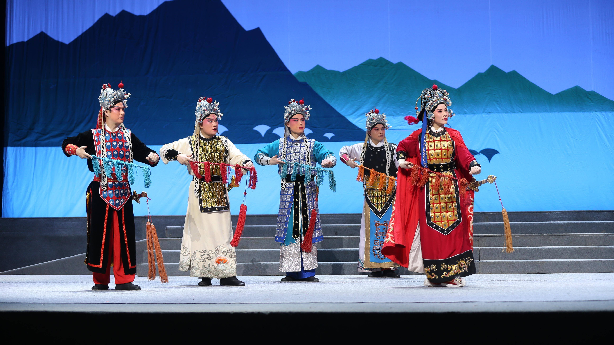
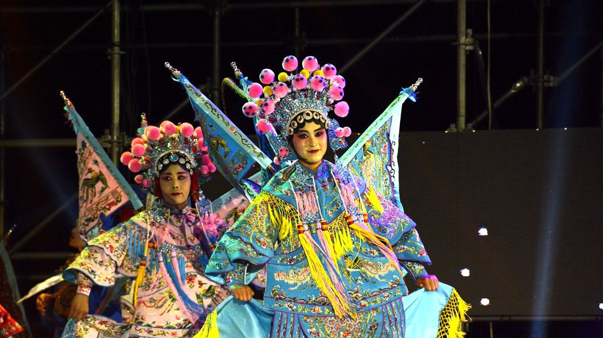
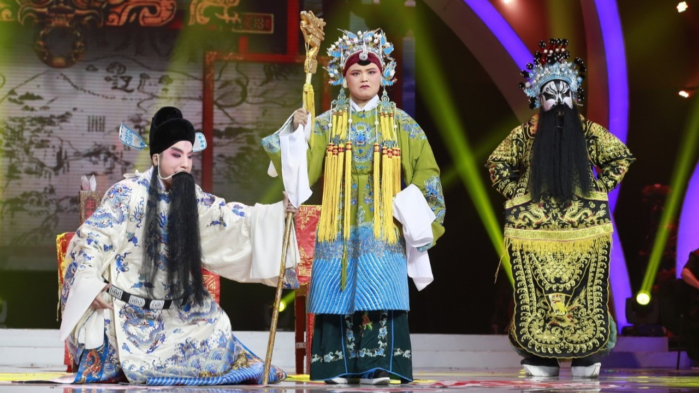

豫剧深度解读
艺术特色 · 代表人物 · 经典剧目

艺术特色
豫剧以河南方言为语言基础，融合了黄河流域的乡土文化特质，形成了唱腔朴实酣畅、表演真切自然、语言通俗易懂的艺术风格。豫剧唱腔铿锵有力，抑扬有度，行腔酣畅，吐字清晰，韵味醇美，生动活泼，善于表达人物内心情感。其音乐伴奏以板胡为主奏乐器，配以二胡、琵琶、笙、笛等民族乐器，形成了独特的音乐风格。豫剧既能演绎帝王将相的宏大叙事，也能展现市井百姓的烟火人生，兼具高雅艺术的审美价值与民间艺术的通俗活力。
代表人物
豫剧发展史上涌现出众多杰出艺术家，其中常香玉被誉为"豫剧皇后"，她创立的常派艺术以声腔优美、表演细腻著称，代表作《花木兰》《拷红》等脍炙人口。马金凤以其独特的"帅旦"表演风格闻名，《穆桂英挂帅》成为豫剧经典。此外，陈素真、崔兰田、阎立品、桑振君等艺术家各具特色，分别创立了陈派、崔派、阎派、桑派等艺术流派，为豫剧艺术的繁荣发展做出了卓越贡献。


经典剧目
豫剧传统剧目数量众多，据统计可达千余出，题材涵盖历史演义、民间传说、侠义故事、家庭伦理等多个领域。其中《辕门斩子》《穆桂英挂帅》《花木兰》《红娘》《铡美案》等剧目历经岁月沉淀，成为流传最广、影响最大的经典之作。《辕门斩子》以杨家将故事为背景，展现了杨延景的刚正不阿与家国情怀；《花木兰》讲述巾帼英雄替父从军的传奇故事，其中"刘大哥讲话理太偏"唱段家喻户晓，成为豫剧的标志性曲目。